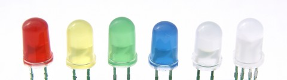
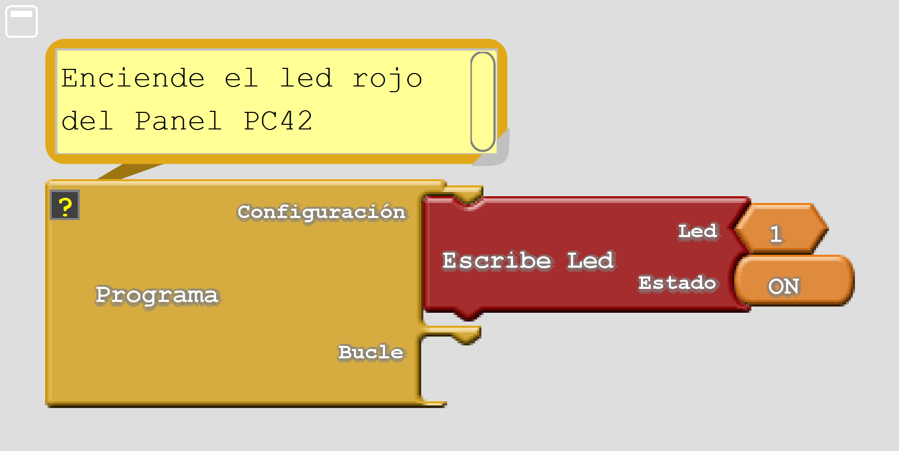
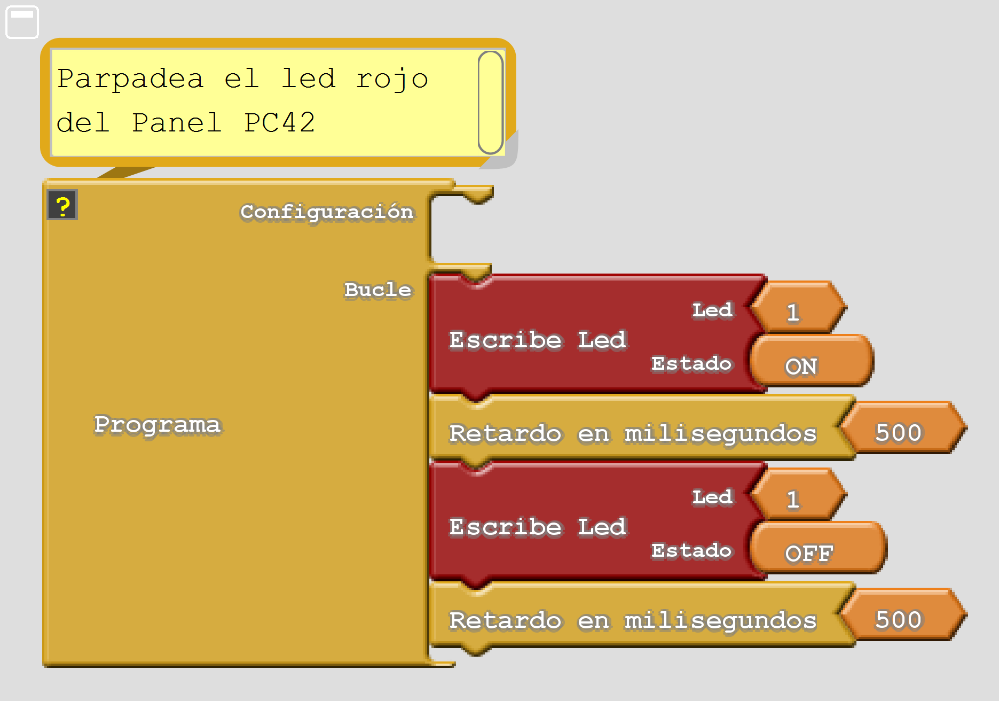

3. Turning the LEDs on and off¶
{kind=link}
Goals¶
- Turn on and off the led diodes of the PC42 control panel.
- Generate led blinking by waiting time.
PC42 control panel leds¶
The control panel has 6 leds. 5 LEDs are single color. The last led on the right is an RGB led with the three basic colors red, green and blue inside.
LEDs Color 1 RED 2 YELLOW 3 GREEN 4 BLUE 5 WHITE 6 RGB-RED 7 RGB-GREEN 8 RGB-BLUE
The RGB led allows to generate colors composed by the sum of others:
LEDs Color 6+7 RGB-YELLOW 7+8 RGB-CYAN 6+8 RGB-PURPLE 6 + 7 + 8 RGB-WHITE
The ledWrite() function¶
-
ledWrite(int ledNum, int bright)¶ This function allows you to turn a specific led on or off. Its parameters are the following:
ledNum: led to turn on or off. Valid values range from 1 for led D1 to 8 for the blue color of led D6.The D6 led is an RGB led, which contains 3 leds inside. The numbers 6, 7, 8 respectively represent the red, green and blue colors of led D6.
bright: brightness with which the led will light up.LED_OFF: turns off the led. It can be replaced by the number zero.LED_ON: turns on the led with maximum intensity.
The digitalWrite() function¶
-
digitalWrite(int ledNum, int bright)¶ This function is similar to the ledWrite function above. Its operation is identical, it accepts two parameters
ledNumandbrightto establish the led that will be managed and its brightness.The function has the same name as the Arduino function for driving the digital output pins. In this way name compatibility is maintained for those programmers accustomed to the Arduino environment.
Example: turn on led D1¶
The following program will permanently turn on led D1 using the ledWrite function
1 2 3 4 5 6 7 8 9 10 11 12 | // Enciende el led D1
#include <Wire.h>
#include <PC42.h>
void setup() {
pc.begin(); // Inicializar el módulo PC42
pc.ledWrite(1, LED_ON); // Encender el led D1
}
void loop() {
}
|
Equivalent program in the Ardublock environment:
{kind=link}
In this link you can download the program file for Ardublock environment 'ledWrite_On'
Example: LED D1 flashing¶
If you want to turn led D1 on and off with a period of one second, one way to do it is to turn on the led, wait half a second, turn off the led and wait half a second. When this sequence is repeated, the led flashes. To achieve a half-second wait, use the delay(500) function, which causes a 500-millisecond (0.5-second) wait. To make the sequence loop indefinitely, the code is inserted inside the loop() block, which loops over and over again inside the Arduino program.
1 2 3 4 5 6 7 8 9 10 11 12 13 14 15 | // Parpadea el led D1 una vez por segundo
#include <Wire.h>
#include <PC42.h>
void setup() {
pc.begin(); // Inicializar el módulo PC42
}
void loop() {
pc.ledWrite(1, LED_ON); // Encender el led D1
delay(500); // Esperar medio segundo (500 ms)
pc.ledWrite(1, LED_OFF); // Apagar el led D1
delay(500); // Esperar medio segundo (500 ms)
}
|
Equivalent program in the Ardublock environment:
{kind=link}
In this link you can download the program file for Ardublock environment 'ledWrite_On_Off'
Exercises¶
Program the code needed to solve the following problems.
Turn on leds D1, D3 and D5 permanently.
Turn on led D1, wait one second, turn on led D2, wait one second, continue the sequence until the first 4 leds are on. Once finished, the program will keep the 4 leds on.
Turn on the red, amber and green leds as in a traffic light.
First the green led will light up and stay on for 4 seconds. Then the green led will turn off and the amber led will light up for 2 seconds. Finally, the amber led will turn off and the red one will turn on, which will remain on for 4 seconds.
This sequence will repeat indefinitely.
Modify the previous exercise so that the amber led blinks three times, changing from on to off every half second, before turning on the red led.
Program a beacon that turns on alternately the red led and the blue led. Each led should stay on for one second. One of the two LEDs must always be on and both LEDs will never be on at the same time.
Turn on led D1, wait a second, turn off led D1 and turn on led D2. In this way, the first 5 leds will light up consecutively. At each moment only one led will be on. Once the sequence is finished, it will start over from the beginning.
Make a modification to the previous exercise so that at all times there are 2 LEDs on.
When the program starts, leds D1 and D2 should light up.
After a second, leds D2 and D3 will light up.
The sequence will continue until leds D6 and D1 are on.
From this moment on, the program will be repeated starting again from the beginning.
The following program has several errors. Correct syntax errors to make it work correctly.
1 2 3 4 5 6 7 8 9 10 11 12 13 14 15 16 17 18 19 20 21 22 23 24 25
// Programa con errores sintácticos // Enciende 6 ledes en secuencia a derecha y a izquierda #include <Wire.h> #include <PC42.h> void setup() { pc.begin(); // Inicializar el módulo PC42 pc.ledWrite(1, LED_on); } void loop() { for(char i=1; i<=5; i++) { pc.ledWrite(i+1, LED_ON); // Encender el led siguiente delay(250); // Esperar 250 milisegundos pc.ledWrite(i, LED_OFF); // Apagar el led anterior delay(100); // Esperar 100 milisegundos } for(char i=5; i>=1; i--) { pc.ledWrite(i, LED_ON); // Encender el led anterior delay(250); // Esperar 250 milisegundos pc.ledWrite(i+1, LED_OFF); // Apagar el led siguiente delay(100); // Esperar 100 milisegundos }
Make a program that makes D1 blink once per second while D2 blinks twice per second.